余记，最后一轮体验打磨
整理信息层次，让金额、备注和常用操作更容易找到。保留已确认的时间栏、两级分类、中间记账入口与统计同页下钻。
2026-10-16 · 原生模拟器实拍 · 使用隔离的合成账本
这些改动尚未上传 TestFlight，手机上的 1.0（15）仍是之前版本。
统计：先看重点，再下钻
此前同源基线：人员独占一行，零退款公式重复占屏。

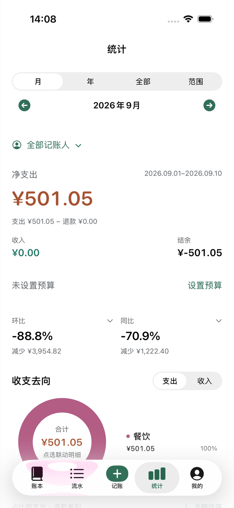
默认人员菜单并入摘要，图表标题上移 38pt。此度量仅对应当前机型、字号与数据。

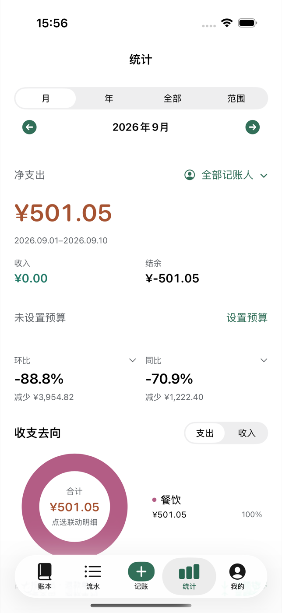
我的：让常用入口更靠前
单项分组较多，偏好被挤到页面下方。

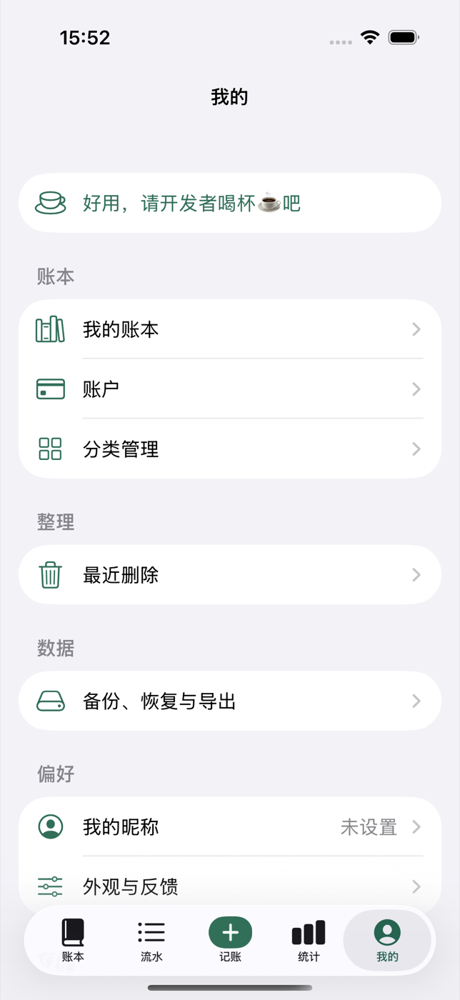
账本管理、偏好、数据与同步归组；支持开发者仍居首。

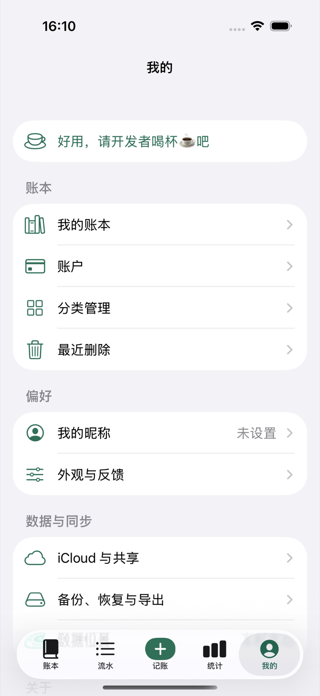
流水：让备注真正可读
账户与备注挤在同一行，长备注难以扫读。

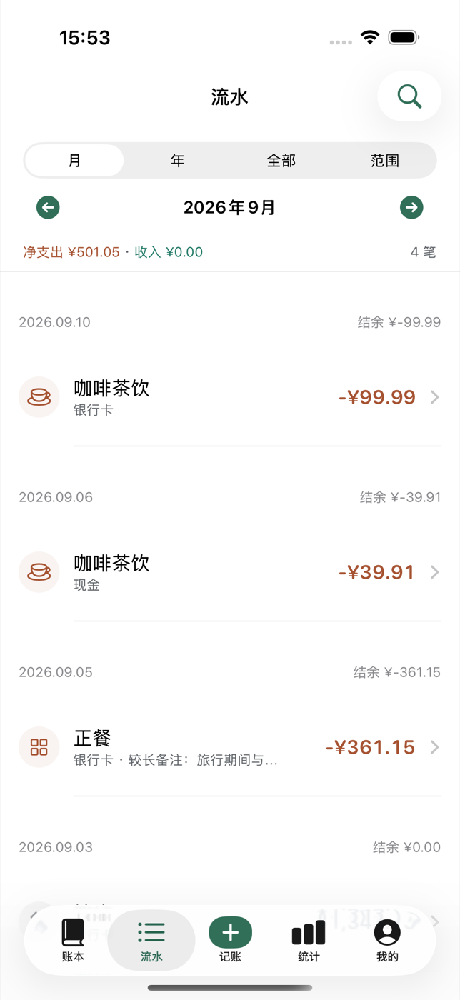
备注独立展示，金额与标题对齐。两图滚动位置不同，用于比较行结构。

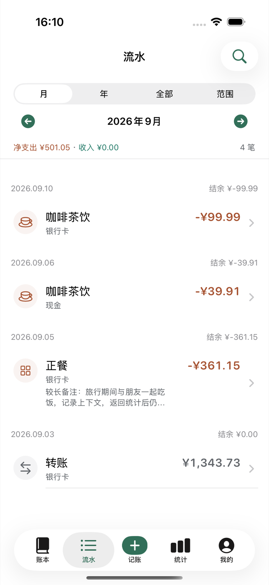
大字号：给内容足够空间


记账：统一细节，减少识别成本
保留两级分类与数字键盘，选中类型补充短线，统一金额字形。

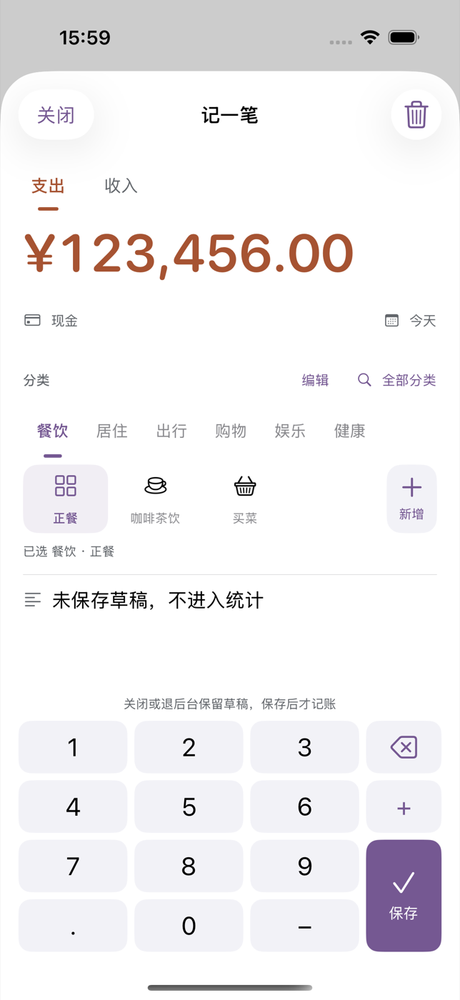
支出、收入继续使用不同语义色，不能只靠颜色识别选中状态。

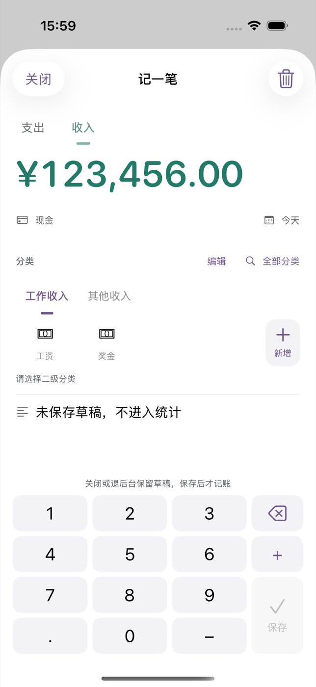
其余页面与边界回归
备注全宽左对齐；返回仍保留原流水期间。

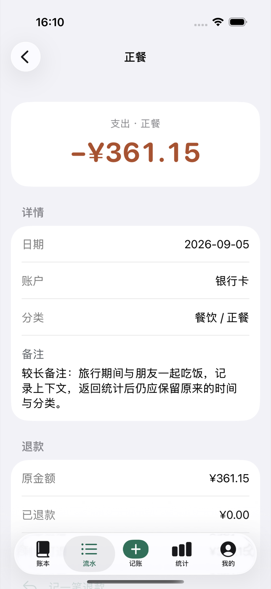
选中人员后保留完整名称、清除入口与统计口径，同页联动。这里使用模拟成员资料。

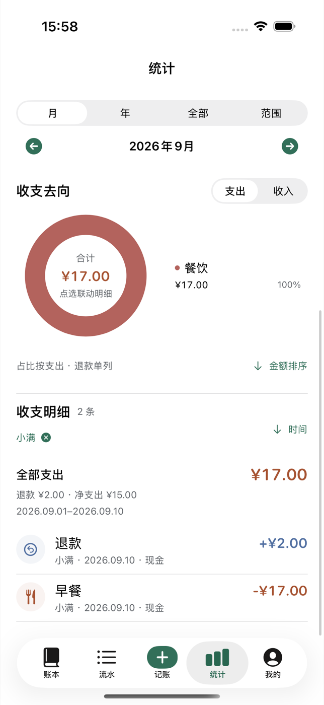
保留已确认的新增分类弹层、图标与文案输入动线。

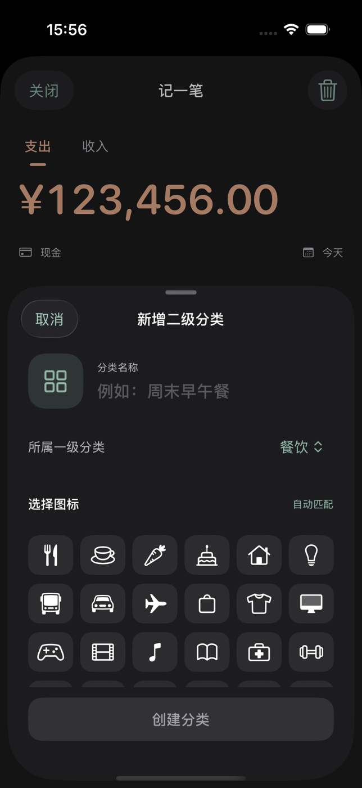
预算表单回归，查看控件层次与取消入口。

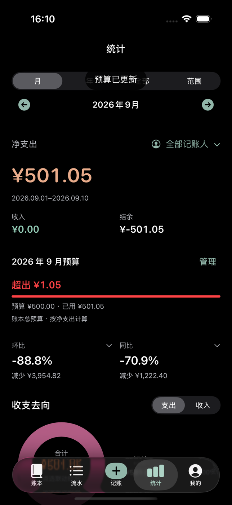
本图为本地预览商品，检查布局和可访问性；不代表真实支付价格问题解决。

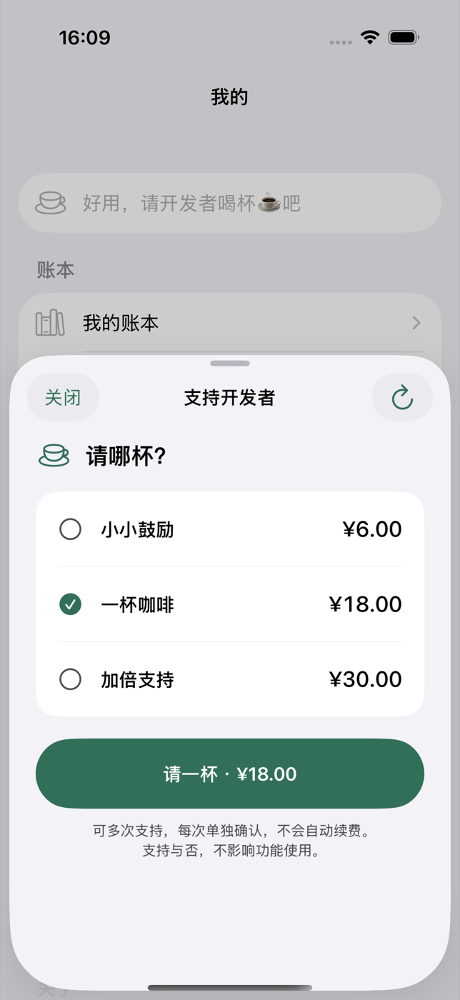
默认字号下外观入口完整位于底栏上方；修复了初次验收中 8.5pt 被遮挡的问题。

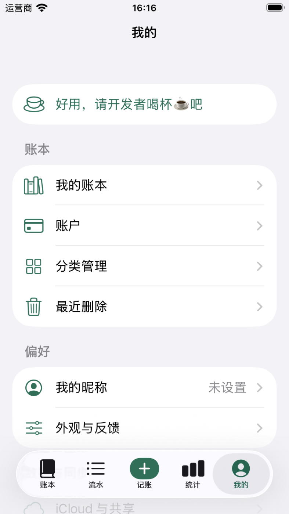
iPhone 15 Pro 模拟器实际运行截图；保留相同期间组件。

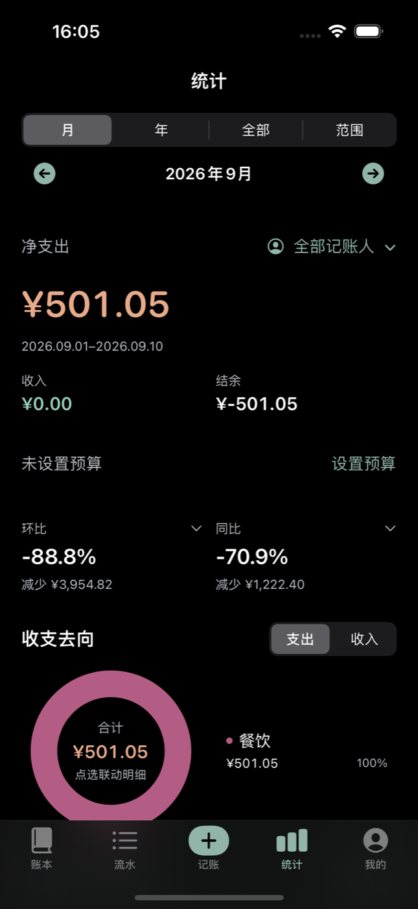